11. 用 Jupyter 结合代码和文本#
11.1. 概述#
典型的数据分析不仅要编写和运行代码，还要撰写文字、展示图片，帮助把分析的来龙去脉讲清楚。事实上，最理想的做法是把这三种媒介交替穿插在一起，让文字和图片为代码及其输出充当解说。本章将介绍如何用 Jupyter 笔记本（notebook）做到这一点，它是数据科学中常用的编程平台。Jupyter 笔记本正好满足我们的需要：它让你把文字、图片和（可执行的！）代码放进同一份文档里。本章的重点是使用 Jupyter 笔记本，通过网页界面编写 Python 程序和撰写文本。这些技能是让分析顺利跑起来的基本功；不妨把它想成早上穿衣！注意，我们假定你已经装好 Jupyter，可以直接使用。如果没有，请先阅读第 13 章，了解如何在自己的电脑上安装和配置 Jupyter。
11.2. 本章学习目标#
学完本章后，你将能够：
新建 Jupyter 笔记本。
在 Jupyter 笔记本中编写、编辑和运行 Python 代码。
在 Jupyter 笔记本中编写、编辑和查看文本。
在 Jupyter 中打开并查看纯文本数据文件。
把 Jupyter 笔记本导出为其他标准文件类型（如
.html、.pdf）。
11.3. Jupyter#
Jupyter [Kluyver et al., 2016] 是一个基于网页的交互式开发环境，用来创建、编辑和运行名为 Jupyter 笔记本的文档。Jupyter 笔记本是同时包含计算机代码（及其输出）与可格式化文本的文档。笔记本把这两样分析产物放进同一份文档——代码不再与输出或书面报告分离——因而是创建可复现数据分析的首要工具之一。可复现的数据分析是指：分析同一份数据时，你能够可靠、轻松地再次得到相同的结果。这听起来像是任何数据分析都本该如此，可现实中往往并非如此；你得有意识地下功夫，才能让数据分析真正做到可复现。Jupyter 笔记本的外观示例见图 11.1。
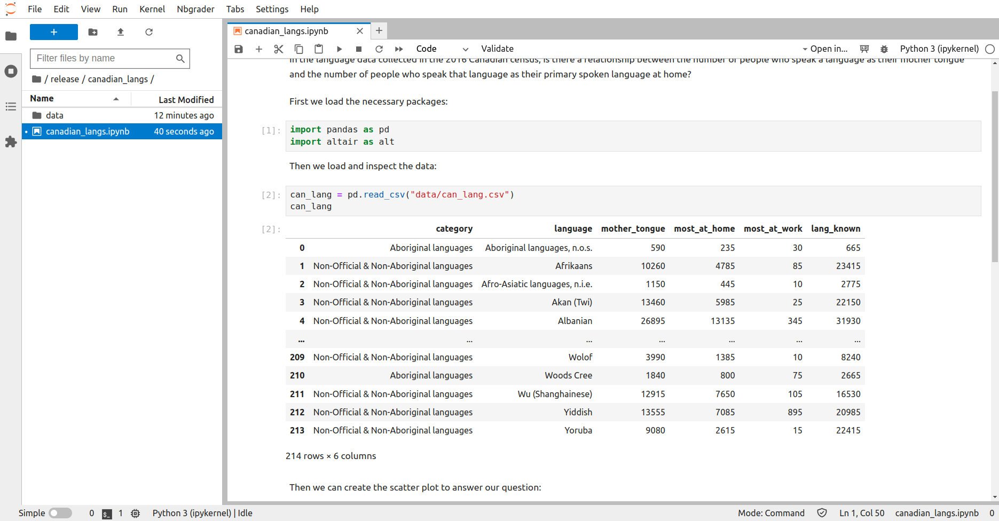
图 11.1 Jupyter Notebook 的界面截图。#
11.3.1. 访问 Jupyter#
开始使用 Jupyter 最简单的办法之一，是使用名为 JupyterHub 的网页平台。JupyterHub 通常已经装好 Jupyter、Python、一批 Python 包和协作工具，配置完毕，可直接使用。JupyterHub 一般由机构创建和配置，访问时需要身份验证。例如，如果你是跟着课程读这本书，授课教师可能已经为你搭好了一个 JupyterHub！
Jupyter 也可以安装在自己的电脑上；安装说明见{numref}`第 %s 章11.4. 代码单元格#
Jupyter 笔记本中存放代码的部分称为代码单元格。尚未运行过的代码单元格，左侧方括号内没有编号（图 11.2）。运行代码单元格会执行其中的全部代码，输出（如果有的话）就显示在生成它的代码正下方。输出可以包括打印出来的文本或数字、数据框（data frame）和数据可视化图形。已经运行过的单元格，左侧方括号内也会有一个编号。这个编号表示单元格的运行顺序（图 11.3）。
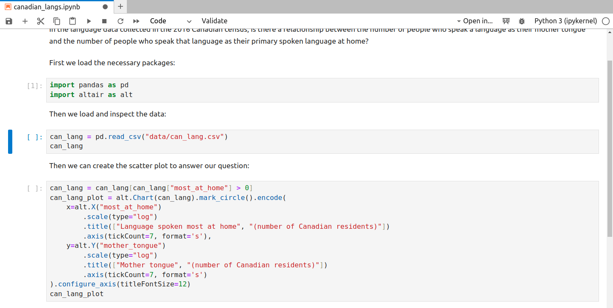
图 11.2 Jupyter 中尚未运行的代码单元格。#
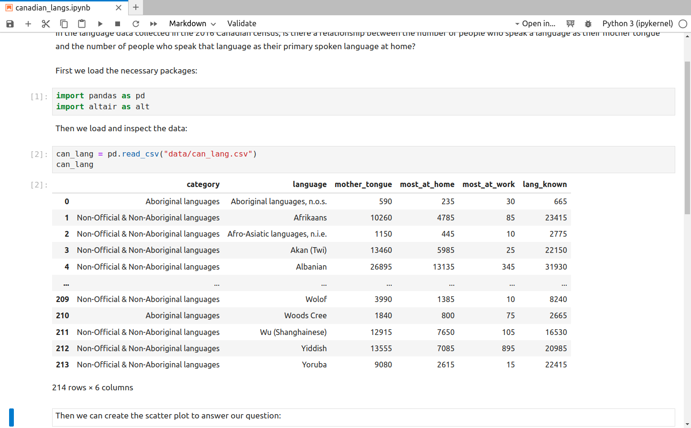
图 11.3 Jupyter 中已经运行过的代码单元格。#
11.4.1. 运行代码单元格#
代码单元格既可以单独运行，也可以作为运行整个笔记本的一部分来执行——后者要用到 Jupyter 的**运行（Run）菜单或内核（Kernel）**菜单里的“运行全部单元格（Run All Cells）”命令。单独运行一个代码单元格，通常是在编辑或编写自己的 Python 代码时采用的做法。运行整个笔记本，通常是为了在把分析分享给别人之前确认它能完整运行，另外也用于把笔记本纳入自动化流程的场合。
要单独运行某个代码单元格，先要激活它：用光标点击该单元格即可。Jupyter 会在单元格左侧用一个蓝色矩形框把它高亮出来，表示已经激活。单元格激活后（图 11.4），既可以按工具栏上的运行（⏵）按钮来运行，也可以使用键盘快捷键 Shift + Enter。
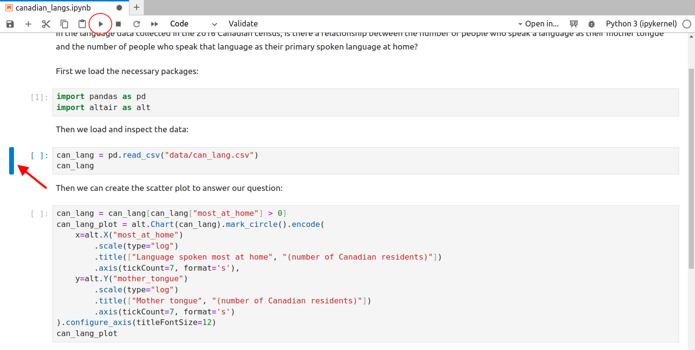
图 11.4 一个已激活、可以运行的单元格。红色箭头指向单元格左侧的蓝色矩形框。蓝色矩形框表示这个单元格可以运行了。点击运行按钮（用红圈标出）即可运行。#
要运行整个笔记本中的全部代码单元格，有三种办法：
在菜单中选择运行 >> 运行全部单元格。
在菜单中选择内核 >> 重启内核并运行全部单元格（Restart Kernel and Run All Cells…）（图 11.5）。
点击工具栏上的（⏭）按钮。
这些命令都会运行笔记本中的全部代码单元格。不过它们之间有一点细微差别：只有上面第 2 种和第 3 种办法会在运行所有单元格之前重启 Python 会话，第 1 种不会重启会话。重启 Python 会话意味着，在这条命令执行之前由运行单元格创建的所有对象都会被删除。换句话说，先重启会话再运行所有单元格（第 2 种或第 3 种办法），相当于在运行整个笔记本之前把 Jupyter 完全重启了一遍。
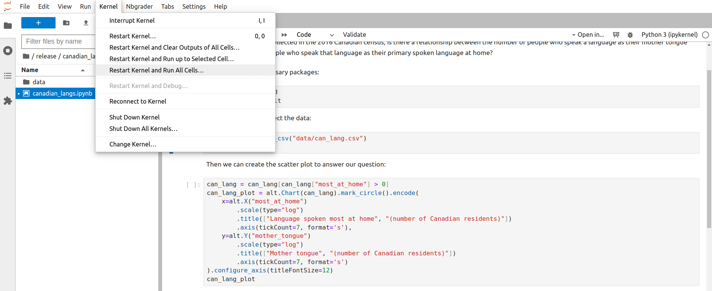
图 11.5 点击重启内核并运行全部单元格……即可重启 Python 会话。#
11.4.2. 内核#
内核是执行笔记本里的代码并输出结果的程序。Jupyter 已经为许多不同的编程语言提供了内核，因此它能解释并执行多种编程语言的代码。要运行 Python 代码，你的笔记本需要有 Python 内核。在窗口右上角可以看到一个圆圈，它表示内核的状态。如果圆圈是空心的（◯），说明内核空闲，随时可以执行代码。如果圆圈是实心的（⬤），说明内核正忙于运行代码。
你可能遇到这样的问题：内核长时间卡住不动、笔记本变得很慢且没有响应，或者内核失去连接。如果出现这种情况，可以按下面的步骤试试：
点击屏幕顶部的内核菜单，再点击中断内核（Interrupt Kernel）。
如果还是不行，点击内核菜单，再点击重启内核（Restart Kernel…）。这样做之后，你必须从笔记本开头开始，把代码单元格一直运行到你上次停下的位置。
如果仍然不行，就重启 Jupyter。先点击屏幕左上角的文件（File）菜单，再点击保存笔记本（Save Notebook），保存好你的工作。接下来，如果你是通过 JupyterHub 服务器访问 Jupyter，就在文件菜单中点击 Hub 控制面板（Hub Control Panel）。选择停止我的服务器（Stop My Server）把它关掉，再点击我的服务器（My Server）按钮重新启动。如果你是在自己的电脑上运行 Jupyter，就在文件菜单中点击关闭（Shut Down），然后重新启动 Jupyter。最后，回到你刚才在用的笔记本。
11.4.3. 新建代码单元格#
要在 Jupyter 中新建代码单元格（图 11.6），点击工具栏上的 + 按钮。Jupyter 中所有新建的单元格默认都是代码单元格，所以你接下来只需在刚建好的单元格里写 Python 代码就行了！
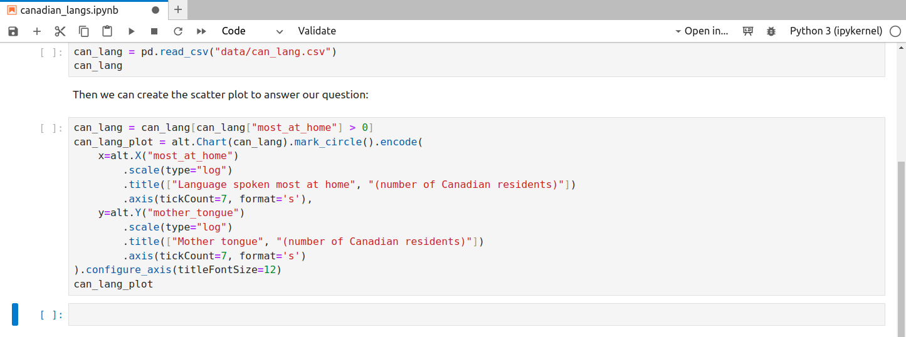
图 11.6 点击 + 按钮即可新建单元格，新建的单元格默认是代码单元格。#
11.5. Markdown 单元格#
Jupyter 笔记本中存放文本的单元格称为 Markdown 单元格。Markdown 单元格是富文本（rich text）单元格，也就是说，你可以把文字加粗、设为斜体，创建各级标题，创建项目符号列表和编号列表，等等。这些单元格之所以叫“Markdown”，是因为它们用 Markdown 语言来指定富文本格式。在 Jupyter 的 Markdown 单元格里写文字，并不需要先学会 Markdown；直接用纯文本也完全没问题。不过，你以后可能还是想了解一点 Markdown，这样才能做出格式美观的分析文档。从哪里开始学 Markdown，可以看本章末尾的拓展资源。
11.5.1. 编辑 Markdown 单元格#
要编辑 Jupyter 中的 Markdown 单元格，需要双击该单元格。双击之后，会显示未格式化的文本，也就是未渲染（unrendered）的版本（图 11.7）。然后就可以用键盘编辑文本了。要查看格式化（即已渲染）后的文本（图 11.8），点击工具栏上的运行（⏵）按钮，或使用 Shift + Enter 快捷键。
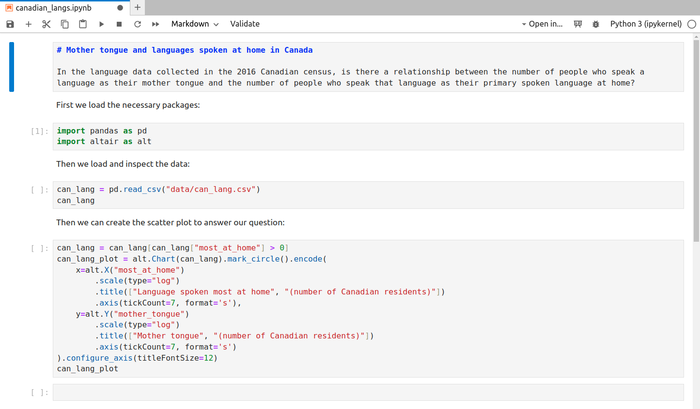
图 11.7 Jupyter 中尚未渲染、可以编辑的 Markdown 单元格。#
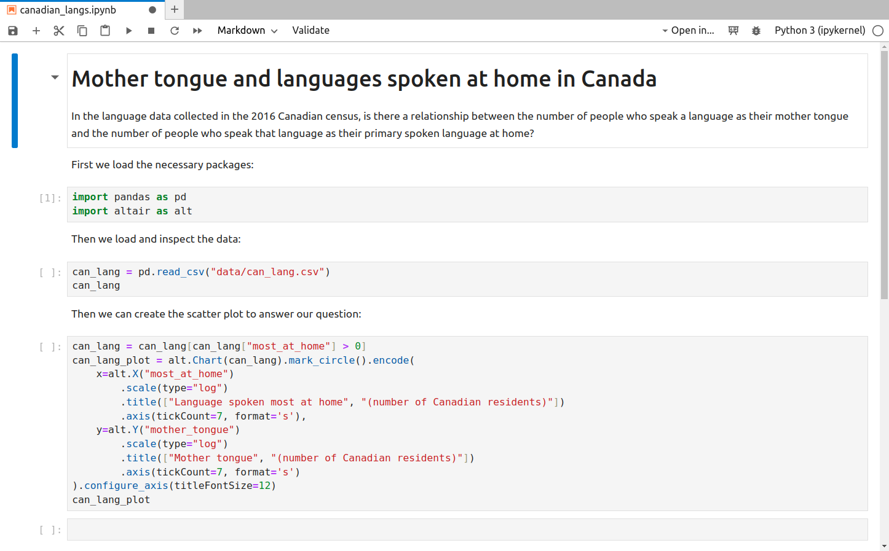
图 11.8 Jupyter 中已经渲染、呈现出富文本格式的 Markdown 单元格。#
11.5.2. 新建 Markdown 单元格#
要在 Jupyter 中新建 Markdown 单元格，点击工具栏上的 + 按钮。Jupyter 中所有新建单元格默认都是代码单元格，所以必须改变单元格格式，它才会被识别为 Markdown 单元格并渲染出来。做法是：用光标点击该单元格，确认它已经激活。然后点击工具栏上标着“代码（Code）”的下拉框（它就在 ⏭ 按钮旁边），把它从“代码”改成“Markdown”（图 11.9）。
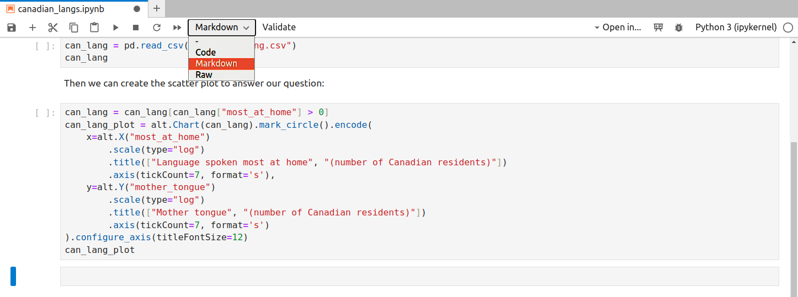
图 11.9 新建的单元格默认是代码单元格。要创建 Markdown 单元格，必须改变单元格格式。#
11.6. 保存你的工作#
和对待任何正在处理的文件一样，一定要经常保存，免得丢失已完成的进度！Jupyter 有自动保存（autosave）功能，会定期保存打开的文件，默认每两分钟保存一次。你也可以手动保存 Jupyter 笔记本：在文件菜单中选择保存笔记本，点击工具栏上的磁盘图标，或者使用快捷键（Windows 上是 Control + S，Mac OS 上是 Command + S）。
11.7. 运行笔记本的最佳实践#
11.7.1. 运行代码单元格的最佳实践#
读到这里，你大概已经知道（至少能想到），Jupyter 笔记本非常擅长交互式地编辑、编写和运行 Python 代码——它们本来就是为此设计的！因此，Jupyter 笔记本在代码单元格的执行顺序上很灵活。这种灵活性意味着，用运行（⏵）按钮可以按任意顺序运行代码单元格。但这种灵活性也有代价：可能让笔记本的代码无法按线性顺序（从笔记本顶部到底部）执行。非线性笔记本会带来麻烦，因为代码文档习惯上都按线性顺序运行，别人运行你的笔记本时也会这样期待。最后，如果代码要用在某种自动化流程中，就必须按线性顺序、从笔记本顶部到底部运行。
最容易在不经意间做出非线性笔记本的做法，就是只靠（⏵）按钮来运行单元格。例如，假设你写了一段 Python 代码来创建一个 Python 对象，比如名为 y 的变量。运行该单元格、创建出 y 之后，它会一直存在，直到你用 Python 代码特意删除它，或者 Jupyter 笔记本的 Python 会话（即内核）被停止或重启。它也可以被另一个不同的代码单元格引用（图 11.10）。这两点合起来意味着：你可以在笔记本更靠前的位置写一个引用 y 的单元格，并在当前会话中顺利运行而不报错（图 11.11）。在以后的会话中，只有当你按同样不合常规的顺序运行这些单元格，才可能成功。可是这种不合常规的顺序很难记住，也不是别人期望的执行顺序。所以以后按常规的线性顺序运行这个笔记本时，就会出错（图 11.12）。
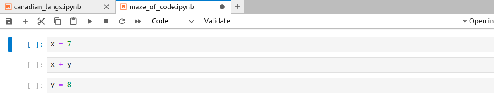
图 11.10 乱序编写，但尚未运行的代码。#
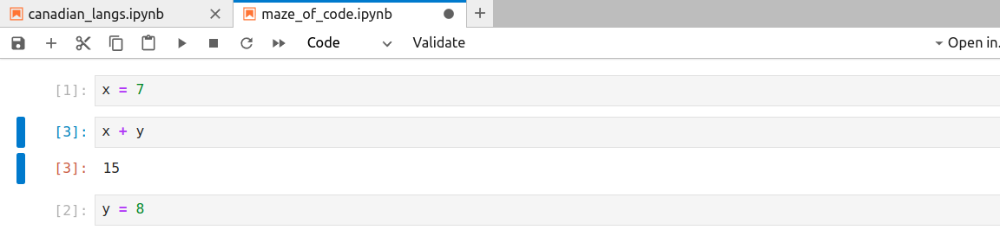
图 11.11 乱序编写，并用运行按钮以非线性顺序成功运行的代码。执行顺序可以顺着代码单元格左侧的编号看下去；这些编号的顺序就表示单元格的运行顺序。#
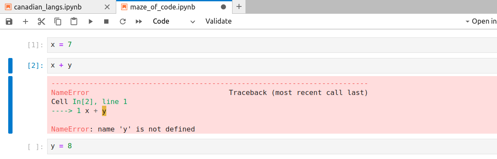
图 11.12 乱序编写，并用“重启内核并运行全部单元格……”按线性顺序运行的代码。结果第二个代码单元格运行时出错，没能把笔记本中的全部代码单元格都运行完。#
你还可能无意中做出一个不能正常运行的笔记本：在某个单元格里创建了一个对象，而这个对象后来被删除了。这种情形下，该对象只在那一个 Python 会话中存在，笔记本重启后再运行就不存在了。如果笔记本中另有单元格引用了这个对象，那么在新会话中重新运行整个笔记本时就会报错。
编写代码时，这些情况可能不会给当前 Python 会话带来负面影响；但你现在应该看出来了，以后在新的会话中运行该笔记本时，它们很可能导致报错。经常在全新的 Python 会话中运行整个笔记本，有助于避免这类问题。如果你重启会话后，按线性顺序运行所有单元格时冒出新的报错，至少你能意识到存在问题。越早发现，就越能及时修好问题，确保笔记本可以从头到尾线性运行。
我们建议的最佳实践是：在每一段工作中，至少在全新的 Python 会话里完整运行整个笔记本 2–3 次。请注意，这一点很关键：你必须在全新的 Python 会话中做这件事，也就是要重启内核。我们建议使用内核 >> **重启内核并运行全部单元格……**命令，或者工具栏上的 ⏭ 按钮。注意，运行 >> 运行全部单元格菜单项不会重启内核，所以它不足以防范这类错误。
11.7.2. 在笔记本中引入 Python 包的最佳实践#
如今大多数数据分析都依赖外部 Python 包提供的函数，这些包并非 Python 自带。本书大量使用的 pandas 包就是一例。借助这个包，我们可以使用 read_csv 等函数读取数据，使用 loc[] 等函数取行和列的子集。我们还用 altair 包绘制高质量的图形。
如前文所述，外部 Python 包必须先加载，才能使用其中的函数。我们推荐用 import package_name 加载，也可以再给它起个更短的别名，如 import package_name as pn。可是这行代码应该写在 Jupyter 笔记本的什么位置呢？一种想法是在用到该函数之前才加载这个库。不过，这样做虽然技术上可行，却会给查看或尝试运行该笔记本的人造成隐含的、至少是不明显的 Python 包依赖。如果在另一台电脑上运行该笔记本时没有安装所需的 Python 包，这些隐含依赖就会导致报错。此外，如果数据分析代码运行起来很耗时，那么要找出必须安装哪些隐含依赖才能让分析顺利运行，就会花掉大量时间。
因此，我们建议在 Jupyter 笔记本靠前位置的某个代码单元格里加载所有 Python 包。在开头加载全部包，可以保证在调用其中的函数之前所有包都已加载——前提是按上面的建议，从顶部到底部按线性顺序运行笔记本。这也能让别人在查看或运行笔记本时，一眼看出分析用到了哪些外部 Python 包，从而知道要在自己电脑上安装哪些包才能顺利跑通分析。
11.7.3. 运行笔记本的最佳实践小结#
编写代码时，保证它能按线性顺序执行。
在 Jupyter 笔记本中写代码的过程中，经常按线性顺序完整运行笔记本（每段工作 2–3 次），做法是使用 Jupyter 菜单中的内核 >> **重启内核并运行全部单元格……**命令，或者工具栏上的 ⏭ 按钮。
把加载外部 Python 包的代码写在 Jupyter 笔记本靠前的位置。
11.8. 查看数据文件#
把数据文件读入 Python 之前，先预览一下很有必要：看看有没有列名、分隔符是什么、有没有需要跳过的行。在 Jupyter 中，可以在 Jupyter 文件浏览器里右键点击文件名，选择打开方式（Open with），再选择编辑器（Editor）（图 11.13），这样就能以纯文本形式预览这些纯文本数据文件，例如逗号分隔文件和制表符分隔文件（图 11.14）。如果你没有指定用编辑器打开数据文件，Jupyter 就会为你渲染出一张漂亮的表格，这时你看不到列与列之间的分隔符，也就不知道该用哪个函数，也不知道该用哪些参数、为它们指定什么取值。
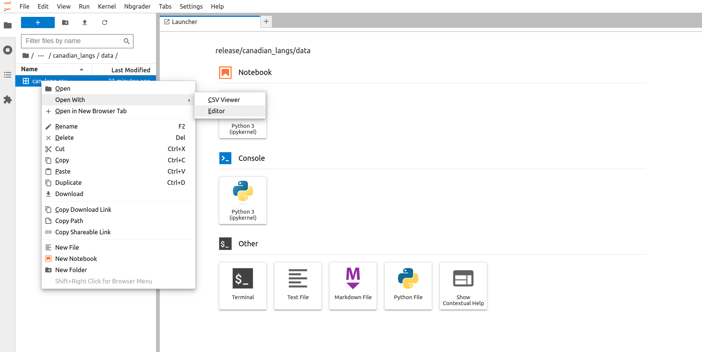
图 11.13 在 Jupyter 中用编辑器打开数据文件。#
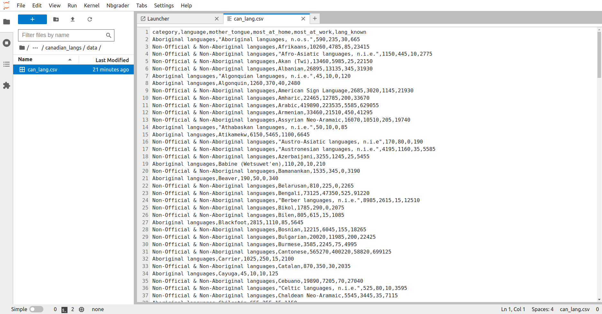
图 11.14 在 Jupyter 的编辑器中查看数据文件。#
11.9. 导出为其他文件格式#
在 Jupyter 中，查看、编辑和运行 Python 代码都是在扩展名为 .ipynb 的 Jupyter 笔记本文件格式中完成的。这种文件格式在 Jupyter 之外不太容易打开和查看。所以，要把分析分享给不常用 Jupyter 的人，建议把运行过的分析导出为更常见的文件类型，比如 .html 文件或 .pdf。我们建议在运行完分析之后再导出 Jupyter 笔记本，这样代码的输出也能一并分享。不过要注意，别人无法用 .html 或 .pdf 文件运行你的分析。如果你希望他们能复现这份分析，就必须把 .ipynb 格式的 Jupyter 笔记本文件提供给他们。
11.9.1. 导出为 HTML#
导出为 .html 会得到一个便于分享的文件，任何人都可以用网页浏览器（如 Firefox、Safari、Chrome 或 Edge）打开。.html 输出生成的文档，外观上与笔记本在 Jupyter 里的样子很接近。这里有一点要注意：如果 Jupyter 笔记本里有图片，就必须把图片文件和 .html 文件一起分享，别人才能看到图片。
11.9.2. 导出为 PDF#
导出为 .pdf 会得到一个便于分享的文件，任何人都可以用许多程序打开，包括 Adobe Acrobat、Preview、网页浏览器等等。导出为 PDF 的好处在于它是一份独立文档，即使 Jupyter 笔记本引用了图片文件也没关系。遗憾的是，默认设置生成的文档，外观与笔记本在 Jupyter 里的样子差别相当大。在 .pdf 输出中，字体、页边距和其他细节都会不一样。
11.10. 新建 Jupyter 笔记本#
总有一天，你会想为自己的项目新建一个全新的 Jupyter 笔记本，而不是查看、运行或编辑别人创建的笔记本。做法是：切换到启动器（Launcher）标签页，点击笔记本（Notebook）标题下的 Python 图标。如果看不到启动器标签页，可以点击 Jupyter 文件浏览器顶部的 + 按钮新建一个（图 11.15）。
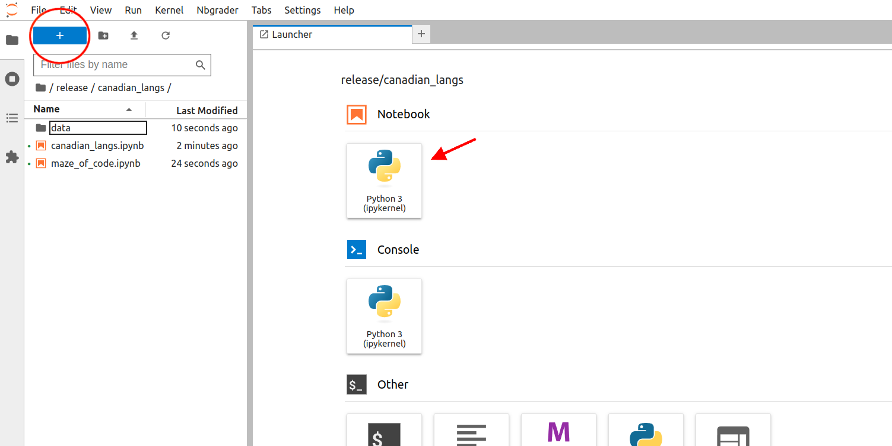
图 11.15 点击笔记本标题下的 Python 图标，就会新建一个使用 Python 内核的 Jupyter 笔记本。#
新建 Jupyter 笔记本之后，一定要给它起一个能说明内容的名称，因为默认的文件名是 Untitled.ipynb。重命名文件时，先右键单击刚创建的笔记本的文件名，再单击重命名（Rename）。这样文件名就变成可编辑的状态，用键盘修改名称即可。按 Enter 键，或者在 Jupyter 界面中的其他位置单击，都会保存改好的文件名。
我们建议文件名中不要使用空白字符或非标准字符。这样做并不会妨碍你在 Jupyter 中使用该文件。不过，一旦你开始做更高级的数据科学项目，涉及重复操作和自动化，这类做法就会带来麻烦。我们建议文件名使用小写字母，并用连字符（-）或下划线（_）分隔单词。
11.11. 拓展资源#
JupyterLab 文档是你进一步了解 Jupyter 笔记本使用方法的好去处。该文档对本章讲到的所有主题给出了详细得多的说明，同时也涵盖更高级的话题。
如果你想学习用于富文本（rich text）格式化的 Markdown 语言，有两个不错的起点：CommonMark 的 Markdown 速查表和 Markdown 教程。
11.12. 参考文献#
- KRKPerez+16
Thomas Kluyver, Benjamin Ragan-Kelley, Fernando Pérez, Brian Granger, Matthias Bussonnier, Jonathan Frederic, Kyle Kelley, Jessica Hamrick, Jason Grout, Sylvain Corlay, Paul Ivanov, Damián Avila, Safia Abdalla, Carol Willing, and Jupyter Development Team. Jupyter notebooks: a publishing format for reproducible computational workflows. In Positioning and Power in Academic Publishing: Players, Agents and Agendas: Proceedings of the 20th international conference on electronic publishing, volume 87. Amsterdam, 2016. IOS Press.